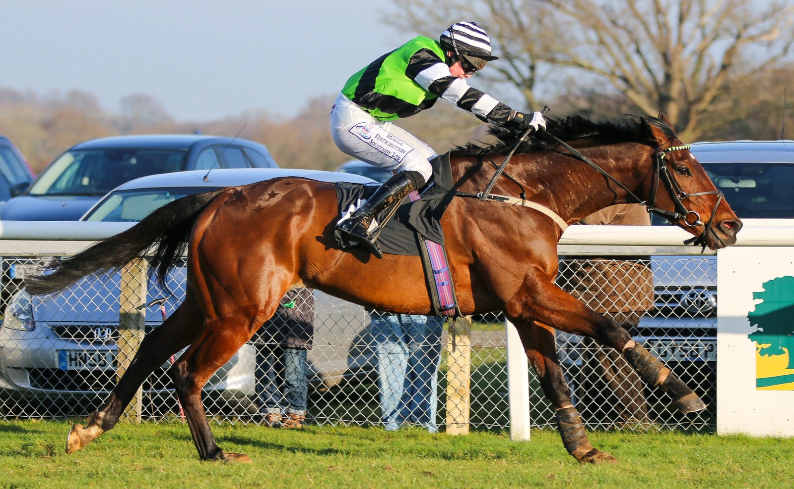

Capability Brown lleva a Aidan O'Brien a su 17ª Killavullan Stakes en Leopardstown
Capability Brown corrió en cabeza toda la Killavullan Stakes (G3) de Leopardstown y dio a Aidan O'Brien su 17ª victoria en la prueba, un récord que ya le pertenecía.

Salió rápido del cajón más interior y ya no soltó el mando. Capability Brown abrió hueco al entrar en la recta y, apretado por Wayne Lordan en los últimos metros, aguantó por un cuerpo a Trean, ganador del Goffs Million. A un cuello llegó King Of Cloughan, vencedor del Listed Windsor Castle. El crono se paró en 1:30,99 sobre las siete furlongs, con piso bueno, y el ganador salía a 10-3.
Fue el doblete de Grupo 3 de la tarde para O'Brien en una carrera cuyo palmarés con él arranca con Footstepsinthesand en 2004. Detrás quedaron dos preparadores de la casa irlandesa: Paddy Twomey con Trean y Joseph O'Brien con King Of Cloughan.
El potro de dos años se había estrenado como ganador el mes pasado en el Curragh, en su tercera salida. En Leopardstown sumó su primera victoria con letras negras y su primer Grupo, y su hoja queda en cuatro carreras, dos triunfos y un tercer puesto. Corre para Michael Tabor, Derrick Smith y Mrs John Magnier, y lo crió Coolmore.
La sangre explica parte de las expectativas. Es el ganador de Grupo número 214 de Dubawi y su madre es Maybe, hija de Galileo, ganadora del Moyglare Stud Stakes (G1) y campeona europea. Es además hermano materno de Saxon Warrior, que se llevó el Racing Post Trophy y las 2000 Guineas.
Chris Armstrong, de Ballydoyle, repartió el mérito: «Wayne le ha dado una monta de diez. El caballo es increíblemente noble y ha ido progresando carrera a carrera. Cuando Wayne le apretó de verdad, se estiró hasta la meta y ganó con solvencia».
El plan, de momento, queda abierto. «Es de los que ilusionan para una carrera preparatoria el año que viene», añadió Armstrong. «Si sale bien de hoy, Aidan podría incluso mirar a Francia el próximo fin de semana».
Por Martín Larrañeta